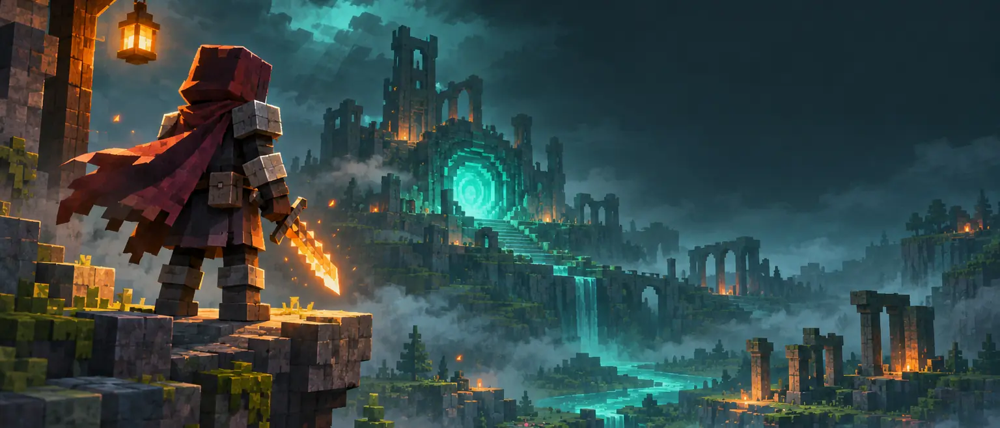
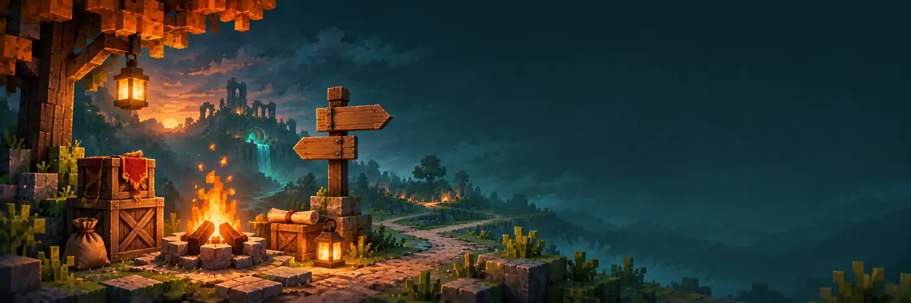
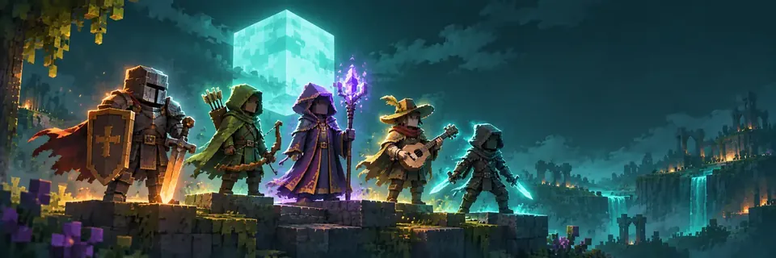
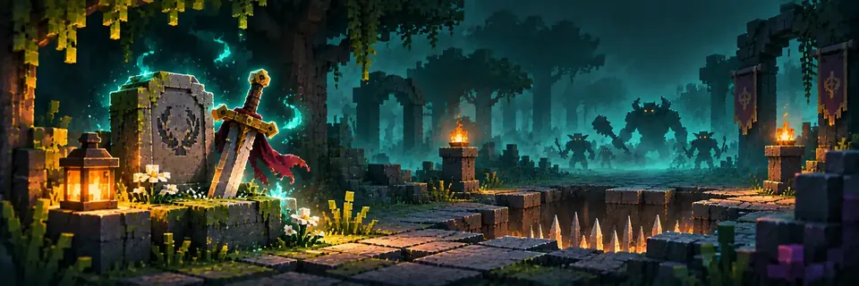

Craft to Exile 2 · 2.1.4 · 我哋嘅 RPG Server
放逐者手記
- 12個職業
- Lv 1–100
朋友專用嘅 RPG server：12 個職業、龍寵、世界 Boss、地圖副本。跟住下面嘅路線行；裝備、技能、物品嘅資料喺「資料庫」頁。
- Server
- comeplay.tplinkdns.com:25566
- 出生點（新手城廣場）
- X 3488 · Y 78 · Z 6460
- 等級上限
- Lv 100
- 每日重啟（香港時間）
- 06:00 · 12:00 · 18:00 · 00:00
最新重點
最新重點
- 之後更新全自動：第一次裝 4 個 mod ＋中文包，再喺遊戲入面確認一次
- 龍寵：孵龍蛋、養龍、升級、騎龍、買賣；野生龍同副本旁邊嘅首領會跌龍蛋
- 主世界怪物最高 40 級
- 10 招超稀有大招，戴對應獨特裝就學到
- 世界 Boss 開打，每個擂台旁有傳送石
- /duel 決鬥
- 打怪掉落自動變錢幣；商店有 77 款怪物蛋
- 召喚獸變大
新手路線
由 Lv1 行到 Lv50
朋友專用嘅 RPG server：12 個職業、龍寵、世界 Boss、地圖副本。跟住下面 5 步行就得。
-
開始
揀職業
12 個職業任你揀
- 撳一下 H › 职业，揀職業
- 技能點最多分落 2 個職業
-
Lv1-20
新手村
喺新手城開波，打怪升級
- 出生點 3488 78 6460，城內冇自然怪
- 城外怪物跟附近玩家等級
- 撳 U 做「序章」任務拎新手裝備
-
Lv24
龍寵
孵龍蛋、養龍、打野生龍
- Lv20 起，驯龙师送 1 隻坚甲幼龙蛋，自己打鬥約 30 分鐘孵出
- 野生龍 Lv24 起出現，會跌龍蛋
- 每人最多養 6 隻龍
-
Lv35
轉職同世界 Boss
轉職變強，開始打世界 Boss
- Lv35 搵「轉職導師」，做殺怪任務再決鬥
- 要轉嘅職業要先學咗
- 世界 Boss 定時出，去擂台打：烬翎龙 Lv45-50
-
Lv50
地圖副本
用地牢地圖開副本
- Lv50 起先開到地圖
- 喺新手城 3488 78 6450 嘅 Map Device 放地圖，撳「启动地图」
- 隊友撳「加入地圖」，全隊帶「归家珍珠」離開

準備
安裝同入 Server
- Server 地址
- comeplay.tplinkdns.com:25566
- 整合包版本（一定要一樣）
- Craft to Exile 2 · 2.1.4
- 需要
- 正版 Minecraft Java
方法 A：CurseForge app（最易）
- 去 curseforge.com/download/app 下載 CurseForge app，揀 Minecraft。
- 搜尋「Craft to Exile 2」，撳入去。版本揀 2.1.4，唔好揀最新版。
- 右上角設定 › Minecraft › Java Settings › Allocated Memory 調到 8192 MB（部機要有 16 GB RAM 或以上）。
- 撳 Play。多人遊戲 › 新增伺服器 › 地址填上面嗰個。
方法 B：Prism Launcher
- 去 prismlauncher.org 下載，登入 Microsoft 帳號。
- 新增實例 › CurseForge › 搜尋 Craft to Exile 2 › 版本揀 2.1.4。
- 如果彈出「有啲 mod 要手動下載」嘅清單，逐個撳連結下載，放入佢開畀你嘅 folder，再撳繼續。少一個都入唔到 server。
- 編輯實例 › 設定 › Java › 最大記憶體 8192 MB。
裝 mod 同中文包（必做）
冇裝入唔到伺服器。CurseForge 叫你更新 modpack 唔好㩒。
下載：Google Drive 入面嘅 CtE2-friends-all-in-one-r12v7.zip（4 個 mod ＋ 全部中文，一個檔裝晒）。呢個係最後一次手動安裝，之後更新全部自動（見下面）。
- 下載成個 zip：喺 Drive 對住
CtE2-friends-all-in-one-r12v7.zip右鍵 › 下載，落到嘅應該係一個約 47 MB 嘅 zip。唔好撳入去再下載入面嘅資料夾，咁樣只會落到一部分。 - 打開資料夾：CurseForge › My Modpacks › 撳 Craft to Exile 2 › 右上角 ⋮（三點）› Open Folder。通常係
C:\Users\你個名\curseforge\minecraft\Instances\Craft to Exile 2。Prism：揀個實例 › Folder › Minecraft folder。 - 解壓個 zip：將入面 5 個資料夾
mods、config、kubejs、patchouli_books、resourcepacks全部拖入 Open Folder 嗰層，問到就揀「全部取代」。 - 入遊戲：選項 › 語言 › 简体中文；選項 › 資源包：將
CtE2-BBSMC-zh_cn移去右邊，拉到最頂。 - 入到世界撳 F3+T。
第一次入 Server（只做一次）
連 server 時，自動更新 mod（AutoModpack）會按次序彈出幾個畫面：
- 「证书验证」：畫面顯示一串短指紋
530b0d0c80afd1b8…fa756b63d66c7100，叫你輸入完整嗰串。貼上：530b0d0c80afd1b8c3984b6d5a943dee5c23b3dc97fc2deffa756b63d66c7100 - 「安装模组包」：可能有紅色警告話有「未經驗證嘅 JAR」，檔案係
dragonpanel.jar。呢個係 R1suuu 自己寫嘅龍寵面板 mod，剔個格，等 8 秒再繼續。 - 佢叫你重開遊戲，就重開一次，再入 server。
- 之後唔使再落載。入 server 見到有更新，照畫面指示重開遊戲就得，唔使再去 Google Drive。
- 每次都用同一個 Server 地址入（comeplay.tplinkdns.com:25566）。換另一個地址（例如 IP）會當新 server，要再確認一次指紋。
- CurseForge 可能話你改過個整合包，唔使理。
- 唔好喺 CurseForge 入面搜尋嚟裝 mod，版本要一模一樣。
解壓後得個空資料夾：對住個 zip 右鍵 › 內容 › 剔「解除封鎖」› 確定，再解壓；或者改用 7-Zip、WinRAR 解壓。
入唔到（話 mod 唔 match、channel 唔 match、missing registry）：檢查 mod 有冇開、版本啱唔啱。Prism 用戶一樣，將 jar 放入實例嘅 mods folder。
中文包只啱 2.1.4。翻譯來自 BBSMC 漢化組同 CFPA 社區（非商業用途），技能同天賦係我哋自己補翻。
Server 有白名單。第一次入之前，將你嘅 Minecraft 名 send 畀 R1suuu 加你入去。
開波
第一個鐘做咩
- 入到 server 會出現喺新手城中央廣場（金磚位）。西邊有圍牆嘅村，可以同村民交易。
- 撳 U 開任務書，先做「序章」（睇完剔 ✓ 有獎勵：背包、麵包、錢包、新手裝備），跟住行 Act I。
- 撳 H 出快捷輪盤；快速㩒一下 H 直接開「主枢纽」（Main Hub），職業、天賦、昇華、角色、傭兵全部喺入面。撳 R 出輪盤而唔係放技能？去 選項 › 控制 › 按鍵 › 全部重設。
- 每升一級分配屬性點（力量 / 敏捷 / 智力），唔夠點數著唔到高級裝備。
- 普通鐵甲、鑽石劍冇 Mine and Slash 屬性等於冇用：要用有屬性嘅裝備，或者將「Gear Stat Soul（装备灵魂）」放落裝備度。
呢個 server 冇原版自然回血。生命值再生要有飽食度先會回，而且好慢、仲會食飽食度；要靠食物、藥水或技能補血，出門記得帶夠食物。
怪物等級
怪物等級跟住你，唔係跟距離
怪物等級 = 最近嗰個玩家嘅等級（隊伍取最低），上下差 1 級，限喺每個世界嘅範圍入面。
- 例子：你 8 級喺主世界，周圍啲怪大約 7–9 級；你 30 級返主世界，啲怪大約 29–31 級。
- 主世界怪物最高 40 級。你 41–49 級喺主世界，啲怪都係 40 級。
- 例外：部分怪有自己嘅最低等級，主世界都唔會變弱：Mowzie's 系列 25 級起、Aquamirae 海怪 35 級起、Deeper Darker 50 級起、霜冻巨兽 50 級起、Warden 60 級起、暗夜巫妖等 BOMD Boss 90 級起。頭上有骷髏就快啲走。
- 「狂暴」：你夠高級返舊世界，舊世界嘅怪會升級（例：主世界 50 級起變 50–70，下界 55 級起變 55–75）。
- 怪比你高 4 級或以上：你打佢傷害大減（最低剩 25%），佢最多痛 1.75 倍，經驗同掉落都少；高 10 級以上頭上有骷髏。
- 怪有稀有度：普通、少见、珍稀、史诗（10 級起）、传说（25 級起）、神话（50 級起）。越稀有越厚血、越痛，經驗同掉落都多好多。
- 反刷怪：同一區塊殺太多，經驗同掉落會越嚟越少，四圍行就得。

職業
12 個職業，每人最多揀 2 個
喺「主枢纽 › 职业」揀職業。技能點同被動點最多分落 2 個職業。淨係玩 1 個職業有「单人职业加成」：傷害 +10%、減傷 +5%。
| 遊戲內名 | 大概玩法 | 技能數 |
|---|---|---|
| 战士Fighter | 近戰斧劍、架式、震地、旋風斬 | 15 |
| 斗士Brawler | 空手武術連段，靠「狂怒」疊連擊 | 18 |
| 十字军Crusader | 聖騎士：盾、錘、光環、格擋 | 19 |
| 冰枪手Cryolancer | 冰槍近戰加戰旗，靠冰霜印記 | 16 |
| 游侠Rogue | 匕首、毒、暴擊、閃避 | 16 |
| 猎手Hunter | 弓箭、陷阱、召喚靈狼 | 18 |
| 巫师Elementalist | 火冰法術、隕石、暴風雪、召喚魔像 | 21 |
| 时空法师Chronomancer | 時間、雷、冰嘅控制型法師 | 12 |
| 萨满Shaman | 圖騰、雷電、自然 | 21 |
| 邪术士Warlock | 詛咒、毒、召喚殭屍骷髏 | 17 |
| 血魔导师Sanguimancer | 用血換力量嘅詛咒法師 | 13 |
| 吟游诗人Minstrel | 歌曲加 buff、補血，支援位 | 14 |
- 每個職業嘅技能分 7 行，分別喺 1 / 5 / 10 / 15 / 20 / 25 / 30 級解鎖。
- 技能要配啱武器先放得出：法系要法杖、匕首、錘或鐮刀；弓箭要弓或弩。錯武器會出「你无法使用此类武器施放此法术」。
- 技能要放落技能欄先用得，預設係 R F C V，再加 Shift 就係第 5–8 格。
- 揀錯可以退：右鍵已學嘅技能或天賦退返點數（用重置點），或者用煉金做嘅重置藥水。
- 5 級解鎖傭兵（主枢纽入面），有戰士、獵手、元素學家 3 款跟住你打。
現成配搭見 流派推薦：37 個雙職業組合，連技能、天賦、屬性點同裝備。
新技能：23 招唔使技能點、唔限職業，戴住教技能嘅獨特裝就識；每個職業各有一對專武同專屬飾品。見 超稀有大招同職業專武。
昇華
昇華唔係靠等級，係靠任務
昇華（遊戲內叫「升华」，任務書叫「宗师」）係後期第二棵樹，有 16 個職業，一次只可以揀 1 個；要轉就要先退晒點。
| 點樣攞昇華點 | 喺邊 | 點數 |
|---|---|---|
| 完成 Act II「Defenders of the Nether II」：喺下界 Keeping Castle 用下界之星召喚並打敗 Nether Keeper。完成後開放「宗师」章節 | 下界 | 3 |
| Act III「Slippery Swimmer」（打一條大鰻魚） | 深园 | 2 |
| Act V「They Knew You Were Coming」（打兩個 Farseer） | 终界 / 深淵 | 2 |
| 尾聲 4 個 Boss 任務（The Frozen Tower 等）全部完成 | 尾聲 | 2 |
| 總共（實際上限） | 9 | |
16 個昇華：奥术师、升华使徒、暗影大师、战斗法师、冠军、酋长、元素使、角斗士、守护者、猎手（Predator）、演者、主宰者、死亡巫妖、死灵法师、侠客、欺诈师。任務送嘅額外點數同重置點喺你所有角色之間共用（每個帳號最多 7 個角色）。
點數
每升一級攞到咩
| 點數 | 點樣嚟 | 上限 |
|---|---|---|
| 天賦點（天賦樹） | 開頭 1 點，每級 +1；任務最多再送 25 | 200 |
| 技能點 | 每級 +1；任務再送 10 | 150 |
| 屬性點（力量 / 敏捷 / 智力…） | 每級 +1 | 300 |
| 被動點（職業被動） | 每 2 級 +1；任務再送少少 | 75 |
| 昇華點 | 只靠任務（見上面） | 9 |
| 地圖冊點（Atlas） | 只靠清完 Dungeon Realm 地圖（實際最多約 104） | 200 |
天賦樹搜尋要打簡體字，關鍵字撳一下就複製：見天賦樹搜尋。
技能可以裝輔助寶石（辅助宝石）。格數 = 技能等級 ÷ 4（最多 5 格），再受你自己等級限制：1 級最多 1 格 · 10 級 2 格 · 20 級 3 格 · 30 級 4 格 · 40 級 5 格。技能每升 1 級，你本身都要高 1 級。
錢幣同商店
錢幣點賺、點使
錢幣用 Lightman's Currency。打怪、開寶箱、釣魚、做任務都賺得到，用嚟買嘢、傳送、合成。
六種錢幣
每種等於 10 個細一級嘅；細字係銅幣數。錢幣唔可以鑄造，只可以靠下面嘅方法賺。
| 錢幣遊戲內名 | 等於 | 值幾多銅幣 |
|---|---|---|
| 銅幣铜币 | 最細 | 1 |
| 鐵幣铁币 | 10 銅幣 | 10 |
| 金幣金币 | 10 鐵幣 | 100 |
| 綠寶石幣绿宝石币 | 10 金幣 | 1,000 |
| 鑽石幣钻石币 | 10 綠寶石幣 | 10,000 |
| 下界合金幣下界合金币 | 10 鑽石幣 | 100,000 |
點樣賺錢
最穩定係親手打敵對怪（動物唔計）。掉幾多睇世界，同怪物等級無關。
| 世界 | 平均每隻怪掉銅幣 |
|---|---|
| 主世界 | 6 |
| 下界 | 15 |
| 深园 | 24 |
| 永昼 / 恒晓 | 98 |
| 终界 | 163 |
| 深淵 | 283 |
| 暮色森林 | 423 |
| 副本地圖 | 同主世界 |
- 垃圾變銅幣：敵對怪掉嘅腐肉、骨头等 20 款垃圾，100% 變銅幣（每件 1 個）。清單見 裝備。執過地上物品嘅怪，死咗嗰件垃圾照舊係物品；每隻怪最多變 16 件。材料商店有得買，見建築材料同怪物掉落。
- 其他怪物掉落都會變錢幣，見 商店價錢（怪物掉落）。
- 寶箱：Dungeon Realm 嘅寶箱越高級，錢幣越多。
- 傳說魚：釣到 10 款傳說魚任何一條，多 1–5 個綠寶石幣。
- 任務書：全部任務錢幣獎勵加埋約 72 萬銅幣，每人攞一次。
- 村民交易用鐵幣計；MCA 村莊稅：20 個村民嘅村約每個鐘 40 銅幣。
錢幣用嚟做咩
- 副职业合成每做一次收錢，睇成品稀有度： 普通 1 銅幣少见 5 銅幣珍稀 1 鐵幣史诗 5 鐵幣传说 1 金幣神话 1 綠寶石幣
- 傳送石碑：每 100 格收 1 個銅幣，最多 10 個。
- 任務書「战役商店」章節：可以用錢幣買光環寶石、輔助寶石同隨機獨特裝，同錢幣商店比，見商店價錢（輔助寶石）。
- 哥布林商人：綠寶石幣買藥水、經驗瓶、命名牌同 Mine and Slash 石頭。
- Flan 圈地格：
/flan buy用金幣買格，/flan sell賣返做鐵幣。 - 其他 NPC：Lightman's 村民、Farming for Blockheads 市場、Gateway 珍珠等都收錢幣。
- 玩家之間：錢包（Shift＋B）裝錢幣；ATM 換大細錢同存錢；交易方塊可以開舖賣嘢。
錢幣商店賣咩、幾錢，同回收、怪物蛋、材料價：見商店價錢。

世界
點樣去其他世界
新手城廣場有 5 個傳送門框：北面下界、深园、永昼、恒晓，東面深淵。門前有牌講點火方法，帶齊點火道具撳一下就得。
| 世界 | 等級 | 門框 | 點火 / 入口 |
|---|---|---|---|
| 下界Nether | 10–30 | 黑曜石，4×5 | 打火石。Act I 完成後嘅主線。 |
| 深园Undergarden | 25–40 | 石磚，同下界門一樣形狀 | 深园催化石（Catalyst）。要用下界之星。催化石唔會用完，只可以喺主世界或深园用。 |
| 永昼之地Everbright | 35–55 | Turquoise stonebrick | 御风火石（Zeal Lighter，有耐久）。Gatekeeper 村民有得賣，喺山、平原、雪地村嘅 Gatekeeper 屋。 |
| 恒晓之地Everdawn | 35–55 | Lunar stonebrick | 同上，御风火石。 |
| 终界The End | 50–65 | 要塞入面嘅終界門 | 終界之眼。新手城西南 400 格地底有個要塞：X 3261 Z 6848。 |
| 深淵Otherside | 60–75 | 強化深板岩（廣場東面有一個） | 深渊之心（Warden 掉），點火會用完。Warden 喺遠古城市，最近嗰個喺舊出生村正下面，大約 X 3463 Z 6176 Y −50。 |
| 暮色森林Twilight Forest | 90–100 | 最少 4 格相連嘅水，四邊係泥或草地，上面要種花草 | 喺 32 格內掉一粒鑽石落水（會用完）。只可以喺深淵入面開，主世界開唔到。 |
| Dungeon Realm副本地圖 | 50+ | 地图装置（廣場北面有一部） | 要 50 級先開得。右鍵地图装置，將「地牢地图」（唔係原版地圖）放入最頂格，撳「启动地图」，隊友撳「加入地图」。身上要有归家珍珠先入得，出嚟就用珍珠。归家珍珠 = 1 粒史诗石头 + 6 鐵錠，出 8 粒。 |
先做完嗰個世界嘅 Act 主線，再去下一個，會順好多。

新手城
新手城同點樣返城
滑鼠滾輪放大縮細，拖動移動（手機用兩隻手指）。放大少少就見到建築名；右下角係滑鼠位置嘅遊戲座標。
城入面有咩
- 中央廣場：出生點、「新手城」传送石碑、噴水池、5 個傳送門框、地图装置、副本告示板（南邊）。
- 西區村：有圍牆，村民可交易，有農田。
- 北街：旅館、酒館、市集屋、教堂、井同市集攤；再上面係城門。
- 東北角：法師塔、鐵匠鋪、馬房。
- 圍牆城（東邊）：石山上嘅小城，好多屋同村民。
- 城堡（廣場南面）：起喺石山上面。
- 東南角：石磚鐵匠鋪同小石堡。
城堡南邊有不死者之塔（敵對怪），夜晚出城小心。建築：Nevas Buildings、sekai。
點樣返城
- 冇
/home同/spawn。死咗而又冇床，就返廣場出生點。 - 床或重生錨可以改重生點。
- 传送石碑（Waystone）：右鍵「發現」咗之後，可以由任何一個石碑傳去另一個。村入面成日都有。
- 廣場出生點東邊嘅「新手城」传送石碑（X 3493 Z 6460）：第一次入 server 記得右鍵登記。之後喺任何石碑或者用传送石都可以傳返嚟。
- 石碑之間傳送唔使經驗，每次收少少銅幣：每 100 格 1 個，最多 10 個。由其他世界直接傳返嚟，「新手城」石碑要設成全域（Global）。
- 副本同村莊附近會自動出石碑：第一次行到副本或村莊附近而又冇石碑，就會喺結構外面放一個，名叫「副本名·方向距離」（例如「被感染神殿·南780」），並幫附近嘅人自動登記。地底副本要入到去先觸發，石碑放喺地面，要自己撳一下佢。石碑拆唔到。
- 打
/wstarget：列出離你最近、你未登記嘅 3 個石碑（方向、距離、座標）。撳「[Add]」加入 Xaero 小地圖做路標。/wstarget all數 3000 格內仲有幾多個未登記。已登記嘅石碑 Xaero 小地圖會顯示。 - 下面副本地圖嘅 ◆ 係附近全部石碑位置，可以計劃探索路線。
- 传送石（Warp Stone）隨身帶，可以傳返去你發現過嘅石碑（冷卻 2 分鐘）。仲有传送卷轴同返回卷轴。
- 圈地保護屋：用金鋤頭右鍵地面（Flan 圈地）。
新手城唔使 OP 都用得
- 所有功能人人用得：傳送石、地圖裝置、傳送門框、錢幣商店、祭壇、告示板。
- 城入面受保護：非 OP 唔可以拆／起方塊、倒水倒岩漿、點火、踩爛農田、拆畫框同盔甲架；城入面嘅箱、桶同其他儲物鎖住，非 OP 開唔到（屋都一樣）。
- 村民打唔死：城入面嘅村民（包括 MCA 村民同流浪商人）食任何傷害都冇事。
- 不死者之塔嘅刷怪籠照出怪；城其他地方唔會自然出敵對怪。
- OP（任何等級）可以喺城起野；用
/otp 玩家名或/otp x y z傳送，等級 1 嘅 OP 亦可以用原版/tp。
副本
新手城附近嘅副本
廣場南邊有塊副本告示板，寫晒座標。地圖上嘅號碼同列表一樣。座標用 F3 睇，或者撳 M 開地圖。
滾輪縮放、拖動。撳地圖圓點或者列表入面嘅副本，就會飛去嗰度。綠色＝小型、藍色＝中型、紅色＝大型，★＝出生點，◆＝传送石碑（紫色＝副本旁邊嗰個）。
小型 快打，10–20 分鐘
中型 組隊，30–60 分鐘
大型 準備好先去
世界 Boss
世界 Boss：約朋友打大 Boss
固定時間喺副本重生嘅大 Boss，一個人打唔贏，約朋友一齊打。打死之後人人有份。另外仲有野生龍同副本旁邊嘅首領場地。
Boss 一覽
| Boss | Lv | 擂台同傳送石 |
|---|---|---|
| 殭屍巨人 | 26–31 | 鬥獸場 · 傳送石「鬥獸場·東北610」4040, 93, 6227 |
| 鐵甲巨像 | 32–37 | 海上競技場·現代 · 傳送石「鐵甲巨像海上擂台」5591, 162, 7367 |
| 暗夜巫妖 | 40–45 | 巫妖塔頂平台 · 傳送石「巫妖擂台」2718, 117, 6384 |
傳送石都係全域，任何一個都可以傳過去（見 新手城）。
重生時間
固定鐘數。香港時間 = UTC + 8 小時。
| Boss | 幾耐一次 | 每日 |
|---|---|---|
| 殭屍巨人 | 每 2 個鐘 | 12 次 |
| 暗夜巫妖 | 每 3 個鐘 | 8 次 |
| 鐵甲巨像 | 每 3 個鐘 | 8 次 |
睇晒每隻嘅時間表（UTC 同香港時間）
殭屍巨人（每個雙數鐘 :20）
UTC：00:20、02:20、04:20、06:20、08:20、10:20、12:20、14:20、16:20、18:20、20:20、22:20
香港：08:20、10:20、12:20、14:20、16:20、18:20、20:20、22:20、00:20、02:20、04:20、06:20
暗夜巫妖
UTC：01:50、04:50、07:50、10:50、13:50、16:50、19:50、22:50
香港：09:50、12:50、15:50、18:50、21:50、00:50、03:50、06:50
鐵甲巨像
UTC：02:50、05:50、08:50、11:50、14:50、17:50、20:50、23:50
香港：10:50、13:50、16:50、19:50、22:50、01:50、04:50、07:50
- 打死之後，要下一個時段先再出，最少隔 30 分鐘。
- 未打死嘅 Boss 會等你。冇人喺附近 5 分鐘就收起，有人行近 64 格先再出現。
- 重生前 10 分鐘同 1 分鐘，遊戲內會廣播。
通用規則
等級、人數同血量
- Boss 等級跟隊內最高等級，限喺範圍入面：巨人 Lv 26–31，巨像 Lv 32–37，巫妖 Lv 40–45。
- 比 Boss 低 4 級或以上嘅朋友傷害會被削減（低 6 級或以上得 25%），唔好帶太低級嘅人 carry。
- 人數按「喺擂台入面企咗 5 秒」計。人數加咗血上限加，但唔會回血。
- 血量好高，人越多血越多（4 人只係 1 人嘅 1.9 倍）。
單打、狂暴同超時
- 單打：Boss 少受 30% 傷害（企咗 10 秒後生效，第二人入場就消失）。
- 第一下傷害（或有人行近 12 格 3 秒）開始計時。到時間 Boss 狂暴：傷害 +100%，之後每 30 秒再加。
- 再過 2 分半仲未打死就超時：Boss 回滿血，成場重置，冇掉落。
| 狂暴 | 超時回滿血 | |
|---|---|---|
| 巨人 | 15:00 | 17:30 |
| 巨像 | 18:00 | 20:30 |
| 巫妖 | 17:00 | 19:30 |
共擔重擊（打到一半血之後）
半血後，會喺一個玩家腳下畫圓圈，約 3 秒後爆。
- 圈入面 1 人：食 3 下（差唔多成條血）。2 人：每人 2 下。3 人或以上：每人 1 下。
- 冇人企入去：全場每人食 2 下，Boss 仲回 3% 血。
- 聽到鐘聲、見到圈，叫齊隊友企入去分擔。
- 巨人金圈；巨像灰圈（細啲）；巫妖藍色靈魂火圈。
擂台規則（唔好試）
- 喺擂台範圍外面打 Boss 冇傷害、亦唔計分（企高過範圍都算外）。
- Boss 喺嗰陣，擂台入面唔可以放方塊、拆方塊、倒水、倒岩漿。拉 Boss 出界會彈返去；全隊死晒或走晒 3 分鐘，Boss 回滿血重置，冇掉落。
開打前
- 組一個 M&S 隊：經驗值俾最高傷害嗰個同佢嘅隊友（100 格內）。只計 M&S 傷害；寵物同召喚物記喺主人度。
- 帶食物、藥水、備用武器。用傳送石直達。
每隻 Boss
殭屍巨人
鬥獸場，傳送石「鬥獸場·東北610」X 4040 Y 93 Z 6227 直達。
出招
- 巨拳橫掃：近身先打，唔好企前面。
- 踐踏衝擊波：跳起就避到。
- 重拳砸地：先出紅圈，約 1.5 秒後砸落，行出圈。
- 召喚腐屍：僕從有上限，優先清走。
- 擲大石：專打企遠（14 格外）或爬高嘅人。
- 半血後走得快啲，小怪變屍殼；狂暴後每 15 秒出小怪。
- 會跟 M&S 嘅仇恨，tank 嘲諷有用。場中心半徑約 24 格內先有傷害。
鐵甲巨像
擂台：海上競技場·現代。傳送石「鐵甲巨像海上擂台」X 5591 Y 162 Z 7367 直達。
出招
- 斧劈、砸地、旋轉、踐踏。
- 半血後「裝甲崩裂」：傷害加多少少。
- 鐵屑風暴：一個圈向外推，跳起就避到。
- 鐵甲衛兵（持斧小兵）：半血後出，最多 3 隻。
- 共擔重擊：灰色圈。
- 跳同走位要準；唔好俾衛兵夾住。
暗夜巫妖
擂台：巫妖塔頂平台（圓形，半徑約 21 格，高 Y 117）。傳送石「巫妖擂台」X 2718 Y 117 Z 6384 直接落喺平台，唔使爬塔。
出招
- 彗星：爆炸，唔會爛塔。
- 藍色飛彈：中咗緩速。
- 會飛、會傳送，好難打中。
- 半血後冰原亡魂（射減速箭），最多 6 隻（4 人或以上最多 8 隻）。
- 共擔重擊：靈魂火圈。
- 狂暴後離中心太遠會傳送返嚟。
- 佢會慢慢回血，唔好拖。
掉落規則、每日首殺、超稀有同六件專屬獨特裝：見世界 Boss 掉落。
野生龍
喺野外隨機出現嘅龍，打死有機會跌龍蛋（孵化同養龍見 龍寵）。唔可以餵、馴服或騎。
| 級別 | 名 | Lv | 龍蛋 |
|---|---|---|---|
| 野生龙 | 荒原坚甲龙 | 24–34 | 坚甲幼龙蛋 |
| 野生龙·首领 | 紫晶坚甲龙王 | 27–36 | 坚甲幼龙蛋 |
| 野生龙·首领 | 少年蜷鳄龙 | 29–37 | 蜷鳄龙蛋 |
| 野生龙·精英 | 沼泽蜷鳄龙王 | 32–40 | 蜷鳄龙蛋 |
| 野生龙·精英 | 凛蝮龙王 | 34–40 | 凛蝮龙蛋 |
| 野生龙·世界级 | 远古凛蝮龙 | 40 | 凛蝮龙蛋 |
龍嘅等級跟周圍最高級嘅玩家，但唔會超出上面嘅範圍。
點樣搵
- 每 15 分鐘有 60% 機會出一隻，要有 22 級或以上嘅玩家在線。同時最多 4 隻，冇固定時間表。
- 要有以下等級或以上嘅玩家在線先會出：荒原坚甲龙 22 級，紫晶坚甲龙王 25 級，少年蜷鳄龙 27 級，沼泽蜷鳄龙王 30 級，凛蝮龙王 32 級，远古凛蝮龙 38 級。
- 出現喺 6 個地點之一，行近 64 格先現身：
- 修道院東邊荒原 4204, 91, 6400
- 燈塔北邊荒原 3012, 68, 6204
- 蜘蛛地牢北邊高地 3592, 102, 5852
- 燈塔東邊草原 3152, 95, 6284
- 災厄要塞南邊荒地 3316, 64, 5372
- 蜘蛛地牢南邊草原 3580, 92, 6104
- 出現時聊天欄會廣播「【野生龙】…出现在…」，附座標同走嘅時間；你嘅等級要去到嗰隻龍嘅最低級先收到。世界级全服廣播。最細嗰級（野生龙）唔廣播，靠行街撞到。
- 逗留時間：野生龙 25 分鐘、首領 35、精英 45、世界级 90。打死就冇，下一隻靠下一輪。世界级出現後 8 個鐘內唔會再出另一隻。
- 輸入
/tb可以睇而家有邊隻、座標同剩幾耐。
打法同掉落
- 人數越多血越多。範圍外打冇傷害；远古凛蝮龙要 34 級先可以挑戰，其餘冇等級限制。
- 打到傷害有 10% 或以上（最多 10 人）就有份，人人自己抽。掉落直接入背包，滿咗入「首領信箱」，清位後打
/tb claim。 - 每次必得：銅幣同 Mine and Slash 裝備（野生龙 1 件、首領 2 件、精英同世界级 3 件）。
- 龍蛋機率（每次冇出就加，保底一定出）：
| 級別 | 起始機率 | 每次冇出加 | 第幾次一定出 |
|---|---|---|---|
| 野生龙 | 1.2% | 0.4% | 60 |
| 首领 | 3% | 0.8% | 40 |
| 精英 | 6% | 1.5% | 25 |
| 世界级 | 25% | 15% | 4 |
- 同一種龍嘅蛋，唔同級別嘅龍打死都一齊計。
- 每隻龍另外有 0.3% 機會出「未知龙蛋」（孵化先知係邊種）。
- 精英仲有機會出獨特裝（沉船弯刀、赤龙吐息杖），世界级可以出沉船弯刀、赤龙吐息杖、召唤师之印、霜鳞之盾，全部綁定。你高過龍 4 級或以上機率會減。
副本旁邊嘅首領
副本附近有固定嘅首領場地，打死會重生，唔使等鐘數。行近 48 格內 Boss 先現身。輸入 /tb 睇每隻狀態同你嘅保底進度。
| 首領 | Lv | 場地 | 重生 |
|---|---|---|---|
| 南瓜骑士 | 22–27 | 3336, 95, 6900 | 20 分鐘 |
| 蛛母 | 28–33 | 3540, 87, 6008 | 20 分鐘 |
| 幽灵船长 | 31–36 | 3052, 72, 6276 | 20 分鐘 |
| 赤焰飞龙 | 35–40 | 4064, 128, 6332 | 20 分鐘 |
| 召唤术士 | 41–46 | 3352, 64, 5448 | 20 分鐘 |
| 深暗潜猎者 | 46–51 | 3428, 88, 6112 | 20 分鐘 |
| 克朗普斯 | 36–41 | 3448, 101, 7028 | 90 分鐘 |
| 蛛后 | 44–49 | 3216, 153, 7192 | 90 分鐘 |
| 蜷鳄龙 | 42–47 | 2836, 86, 6692 | 120 分鐘 |
| 凛蝮龙 | 47–52 | 2928, 265, 5536 | 120 分鐘 |
場地喺相關副本附近：南瓜骑士近廢棄神殿，赤焰飞龙近修道院，克朗普斯近狗頭人巢穴，蛛后近被感染神殿，蜷鳄龙近浴場。前 6 隻係普通首領，克朗普斯同蛛后係精英首領，兩隻龍係精英龍。
- Boss 等級跟隊內最高級玩家，限喺上面範圍。冇等級限制，人數越多血越多。
- 場地範圍外打冇傷害，場地冇人 3 分鐘 Boss 會回滿血重置。
- 傷害有 10% 或以上（最多 10 人）先有份，人人自己抽。背包滿咗入首領信箱，打
/tb claim攞。 - 每次必得：銅幣同裝備（普通首領 2 件，精英 3 件）。另外有獨特裝（按 Lv 20–29 / 30–39 / 40–49 分組，綁定），冇出就加機率，保底：普通首領第 40 次、精英第 30 次。
- 精英龍：蜷鳄龙出蜷鳄龙蛋，凛蝮龙出凛蝮龙蛋，起始 2%，每次冇出加 0.5%，第 60 次一定出。龍類 Boss（赤焰飞龙、蜷鳄龙、凛蝮龙）同野生龍都有 0.3% 出「未知龙蛋」。
- 有時會出稀有首領（名前面有「稀有·」），更勁，所有機率 ×5。要 30 級或以上先收到廣播，會喺
/tb睇到。
指令同常見問題
/wb：下一隻幾時出、每隻狀態、你嘅保底進度、信箱幾多件。/wb claim：攞信箱入面嘅戰利品（背包要有位）。/tb：野生龍同首領場地嘅狀態；/tb claim：攞首領信箱入面嘅戰利品。
一個人打得唔得？
基本贏唔到。單打少受 30% 傷害，但狂暴同共擔重擊一個人食 3 下。
獨特裝可以賣嗎？
綁定自己用，唔可以俾朋友。賣俾商店只值底價（100–2,400 銅幣），商店唔賣呢六件。
會唔會搞亂經濟？
大部分價值喺獨特裝同材料。
打到一半伺服器重啟點算？
進行中嘅戰鬥唔會保留。重啟前會有廣播。打死咗未收嘅戰利品喺信箱，唔會唔見。
龍寵
龍寵：養一隻跟你打怪嘅龍
攞一枚龍蛋，孵出嚟養。龍會幫你打、升級、變大，20 級就騎得。最多養 6 隻，同一時間只可以帶 1 隻出嚟。
第一隻蛋
- 即將上線 新手蛋：Lv 20 後去主城（見 新手城）搵「驯龙师」，右鍵，攞 1 枚坚甲幼龙蛋，每人一枚。蛋跌咗，等 24 小時後再搵「驯龙师」，會補返一枚（進度保留）。
- 第一隻龍孵出時會連埋「龙笛」。右鍵龍笛 = 召喚或收回；潜行 + 右鍵 = 睇龍資料。冇咗打
/dpet flute。
點攞蛋、點孵
- 打龍類首領：精英龍、野生龍會掉自己嗰種蛋，越多次冇出機率越高，有保底。背包滿咗，蛋會等你，清出一格就自動送到。睇 世界 Boss 入面嘅野生龍。
- 三隻龍類世界 Boss：烬翎龙、雷角龙、炎帝龙。機率極低，打滿 200 次一定出。
- 「未知龙蛋」：打龍類 Boss 有 0.3% 機率掉。開殼先知係邊種，唔會係坚甲龙。
- 龙契之瞳：戴住或帶喺身上，可以領一隻蓑鲉龙（或龙契龙蛋），每人一次，眼睛唔會消失。
- 買：向其他玩家買（見下面）。錢幣商店唔賣龍同蛋。
孵蛋：蛋放喺背包（快捷欄、背包、副手都得），自己親手打怪就會孵，放箱度唔會郁。最多同時孵 3 隻。孵好會抽稀有度，蛋綁定你，人哋嘅蛋唔會孵。已有 6 隻龍，蛋孵滿都會等，放生或賣一隻就自動孵。
| 龍 | 騎乘 | 孵化（戰鬥時間） |
|---|---|---|
| 坚甲龙 | 地面 | 30 分鐘 |
| 蜷鳄龙 | 地面 + 游水 | 2 小時 |
| 凛蝮龙 | 地面 | 2 小時 |
| 烬翎龙 | 飛 | 3 小時 |
| 雷角龙 | 飛 | 4 小時 |
| 蓑鲉龙 蛋名「龙契龙蛋」 | 飛 + 潛水 | 4 小時 |
| 炎帝龙 | 飛 | 5 小時 |
「未知龙蛋」孵 3 小時。同一種龍可以養兩隻，各有各嘅等級同稀有度。即將上線 所有龍都由 Lv 1 孵出。
龙宠面板
要裝 mod 「龙宠面板」（安裝見 安裝）。三個打開方法：
- 背包旁邊嘅龍按鈕（提示「龙宠」）。
- 打
/dragonpanel。 - 喺「控制」入面，類別「龙宠面板」，綁一個鍵做「打开龙宠面板」（預設冇鍵）。
面板可以睇龍、召喚 / 收回、餵食、換技能、出售、放生。冇 mod 打 /dpet，聊天欄會出一張卡，有按鈕。
- 姿態：跟隨攻擊（預設）、防守（只打攻擊你嘅）、待命（坐低唔打）。
- 主城入面龍唔會出手，亦唔計戰鬥時間。導師試煉唔可以帶龍。
- 收返之後等 10 秒先再召喚得。
養成：升級、餵食、重傷
- 升級：滿級 100。你自己打怪先有經驗，龍要喺你 32 格內。你級數越高過龍，升得越快。
- 永恆稀有度要 3 倍經驗。
- 飽食度滿 100，出戰時每分鐘 -1。低過 40 經驗減半、技能冷卻 +25%；低過 20 唔肯出嚟。
- 餵食要銅幣：面板撳 +25 / +50 / 喂满，或者潜行 + 右鍵龍，手持任何 Lightman's 錢幣就餵滿。例如餵滿 坚甲龙 Lv 50 約 200 銅幣，炎帝龙 Lv 50 約 1,000 銅幣。
- 重傷：生命力 100，歸 0 龍就重傷返屋企，飽食度 -10。等 2–5 分鐘（坚甲龙 2 分鐘，炎帝龙 5 分鐘）；或者俾錢即時復蘇（約餵滿價錢嘅 5 倍）。龍唔會死。
- 龍只聽你，其他人摸唔到你嘅龍。
大細按等級變 即將上線
所有龍用同一條成長線，由小 BB 變成巨龍：
| 等級 | 大細 |
|---|---|
| Lv 1 | BB 龍，約 0.5 格高 |
| Lv 20 | 差唔多同玩家一樣高 |
| Lv 50 | ×1.0 |
| Lv 75 | ×1.5 |
| Lv 90 | ×2 |
| Lv 100 | ×3 |
地方窄（主城、副本、決鬥場）龍會自動縮細；位唔夠就等有位先長。行路時大隻嘅龍（例如炎帝龙）有大細上限，騎住就冇。
技能、技能欄同稀有度表：見龍寵技能同稀有度。
騎乘同飛行
- 龍 Lv 20 起，空手右鍵自己隻龍就騎得。只有主人可以騎。
- 會飛：烬翎龙、雷角龙、蓑鲉龙、炎帝龙。即將上線 要龍 Lv 50 先飛得（現時 Lv 20 已經飛得）。會游水：蜷鳄龙、蓑鲉龙（蓑鲉龙可以潛水）。坚甲龙、凛蝮龙淨係地面騎。
- 龍收返、重傷或者餓壞，騎手會跌落嚟，有 60 秒緩降。
- 即將上線 騎大隻龍時，騎手坐喺龍背上面。
賣、買、放生
- 出售：面板選單撳「出售」，或者
/dpet list <龍ID> <價錢>（龍ID 係面板上嘅 # 編號）。價錢 500 至 5,000,000 銅幣；成交扣 5% 手續費（直售都一樣，賣家收到餘額）。最多 3 隻同時上架，7 日有效，隨時可以取消。 - 直售：直接賣俾在線玩家，面板選「直售」。對方 60 秒內要接受。
- 買：面板撳「龙市」睇市場（一頁 8 隻），撳「购买」。買到嘅龍 1 小時內唔可以再賣。
- 上架中嘅龍都計入 6 隻上限。上架時龍會即時離開你，唔可以召喚或餵食。
- 放生：面板選單撳「放生」，15 秒內再確認。龍永遠消失，冇退款。脫戰 15 秒先放生得。
- 買賣會帶走龍嘅等級、稀有度、技能同名。
上限
- 每人最多 6 隻（包括上架中）。滿咗孵唔到、攞唔到禮、買唔到，先放生或賣一隻。
- 全服同時最多 10 隻龍出戰，滿咗會叫你稍後再試。
決鬥
決鬥競技場
決鬥係自願：唔想玩可以唔理。
決鬥競技場 /duel
同另一個玩家約戰：/duel 玩家名，對方㩒 [接受]，兩人傳送入競技場，打完自動傳返原位。
/duel arena：揀場（或隨機）；/duel spectate 玩家名：入去睇；/duel stats：睇戰績。- 4 個主題競技場：熔岩火山、冰天雪地、叢林、現代。場內破壞唔到方塊。
- 冇耐久損耗、冇死亡懲罰，技能照用；打完生命同狀態還原。
- 5 分鐘時限，到時睇生命百分比，高嗰個贏。

死亡
死亡同常見伏位
- 死咗唔會跌裝備同背包。
- 50 級或以下死冇懲罰；51 級起每次死扣大約 5% 升級所需經驗，同扣 500 恩宠值。
- 冇原版自然回血，Mine and Slash 回血要有飽食度，見第 1 節。
- PvP 開咗，放範圍技能時睇住隊友。寵物有保護，要蹲低先打得中。
- 裝備有耐久。Auto-Repair Kit 每 10 秒自動補，亦可用 Mine and Slash 石頭充返。
- 食物要多款：食得越多唔同嘅嘢，加成越多（Food Book 喺 H 輪盤入面）。

組隊
點樣同朋友組隊
- 開背包，撳左上角「我的团队」掣 → 建立隊伍 → 邀請朋友。指令建隊用唔到。
- 隊友要喺 100 格內先計：經驗先加 100% 再平分，掉落多 25%。
- 怪物等級跟附近最低等級嘅隊員，大細級一齊行，低級嗰個唔會被打爆。
- 附近有 50 級以上嘅人，主世界刷出嚟嘅怪會變 50–70 級，低級朋友都會遇到。
- 收到組隊邀請：] 接受，[ 拒絕。
- 入 Dungeon Realm 時，隊友喺地图装置撳「加入地图」，入場券全隊共用。
常見問題
常見問題
| 情況 | 點做 |
|---|---|
| 「無法驗證用戶名稱」/ Failed to verify username | 完全關咗遊戲同 launcher，重新登入 Microsoft 帳號，等一分鐘再入。唔好狂撳重連。 |
| 話 mod 唔對 / mismatched mod list | 檢查係咪 2.1.4。用 Prism 就要補齊嗰啲要手動下載嘅 mod。唔好自己加減 mod（材質包、光影冇問題）。 |
| 話你唔喺白名單 | 將你嘅 Minecraft 名 send 畀 R1suuu。 |
| 連唔到 / Connection timed out | Server 每日香港時間 06:00、12:00、18:00、00:00 重啟，大約 1 分鐘，等陣再試。Discord 嘅 #rpg-control 睇 server 狀態。 |
| 好 lag / 爆 RAM | 記憶體設 8 GB、關咗其他程式、視野距離調低到 8–12。 |
| 撳 R 出咗個輪盤，放唔到技能 | 選項 › 控制 › 按鍵 › 全部重設。 |
| 背包塞滿垃圾 | 敵對怪掉嘅 20 款垃圾已經自動變铜币，清單見「裝備」。其他垃圾（例如樹苗）：喺铁制背包裝「虚空升级」，將要刪嘅物品放入過濾格，執到即刻刪走。 |
| 天賦樹搜尋冇反應 | 要打簡體字，例如「伤害」唔係「傷害」。用第 5 節嘅字表複製，再用 Ctrl＋V 貼入去。 |
| 職業技能、天賦仲係英文 | 朋友包入面 5 個資料夾要全部拖入去，淨係複製 resourcepacks 唔夠。見 裝 mod 同中文包。 |
| 中文冇晒 / 一半英文 | 確認語言係简体中文，同埋資源包「CtE2-BBSMC-zh_cn」喺右邊最頂，再完全重開遊戲。 |
新技能、配飾、獨特裝見到英文代碼，或者帽嘅說明寫 curios.identifier.headwear | 未裝最新嘅朋友包 CtE2-friends-all-in-one-r12v6.zip。見 裝 mod 同中文包，裝完撳 F3+T。 |
| 迷路 | M 開地圖，F3 睇座標。新手城出生點係 X 3488 Z 6460。 |
| 錢幣點賺、有咩用 | 見「錢幣同商店」。 |
| 死咗會唔會跌嘢 | 唔會。51 級起先會扣少少經驗。 |
按鍵